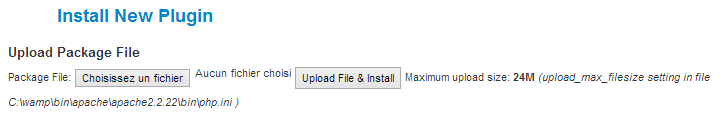

This plugin will add a tab on the user community builder profile that will list their ads.
Please note that this plugin isn't a joomla plugin but
a Community Builder plugin.
In order to install this plugin, click on the 'Plugin
Management' link on the Community Builder Submenu.
Then select the zip folder containing the communitybuilder_adsmanager_plugin and click Upload File & Install.
All you need to do to finish the installation is to publish the plugin.
In the AdsManager Configuration, you can see a 'Third Party' tab, this tab contain a dropbox which allow you to choose the behavior of the user profile in the ads.
Community Builder - Profile + My Ads:
Community Builder - Profile:
Note : This feature doesn't work if JomSocial and Community Builder are both installed on your website.
When you create or edit a field, you can prefill it with the value of a CB field.
You just have to select which field will be used to prefill the AdsManager field.
Note : You can also choose a CB field to fill a dropbox.